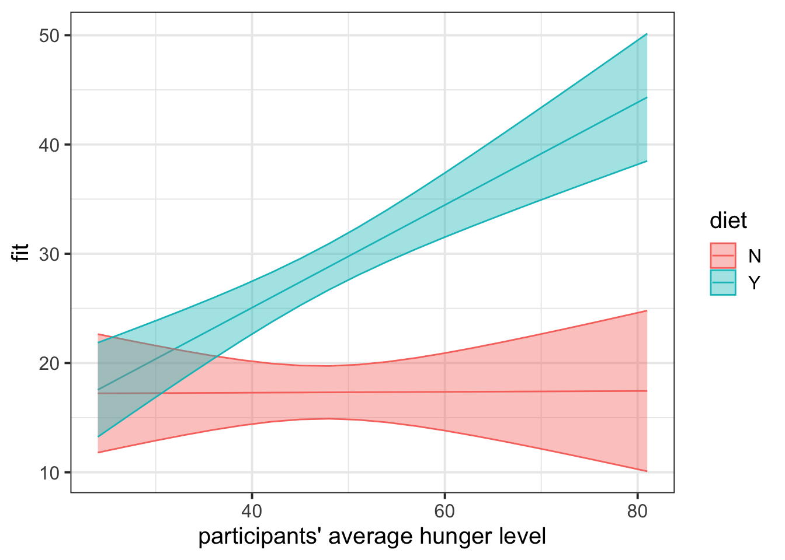
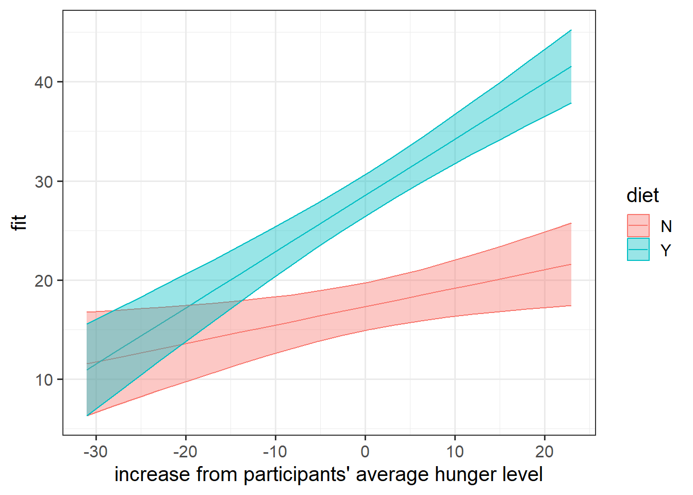

The study is interested in evaluating whether levels of hunger are associated with levels of irritability (i.e., “the hangry hypothesis”). 81 participants were recruited into the study. Once a week for 5 consecutive weeks, participants were asked to complete two questionnaires, one assessing their level of hunger, and one assessing their level of irritability. The time and day at which participants were assessed was at a randomly chosen hour between 7am and 7pm each week.
Always plot your data! It’s tempting to just go straight to interpreting coefficients of this model, but in order to understand what a model says we must have a theory about how the data are generated.
The model above will give us that same old formulaic expression of “for people on average, a 1 unit increase in q_hunger is associated with a 0.17 increase in q_irritability”.
The problem is that in trying to estimate what does q_irritability do as q_hunger increases, we’re ignoring the fact that people tend to have different average levels of q_hunger:
ggplot(hangry, aes(x = q_hunger, y = q_irritability, group = ppt)) +geom_point() +geom_line(alpha=.4) +facet_wrap(~ppt)
So if we try to interpret the fixed effect of our model above as “what happens to a persons’ irritability when they are 1 more hungry?”, we’re not accurately estimating this because our model doesn’t account for the fact that the numbers in q_hunger mean very different things for different people - for person 1 a hunger score of 60 might be “I’m really hungry”, but for person 2 (who usually has a hunger score in the 80s or 90s), 60 could mean “I’m not very hungry at all”.
Question 2
Notewithin effects, between effects, and smushed effects
Research Question: are levels of hunger associated with levels of irritability (i.e., the hangry hypothesis)?
Think about the relationship between irritability and hunger. How should we interpret this research aim?
Is it:
“Are people more irritable if they are, on average, more hungry than other people?”
“Are people more irritable if they are, for them, more hungry than they usually are?”
Some combination of both a. and b.
This is just one demonstration of how the statistical methods we use can constitute an integral part of our development of a research project, and part of the reason that data analysis for scientific cannot be so easily outsourced after designing the study and collecting the data.
As our data currently is currently stored, the relationship between q_irritability and the raw scores on the hunger questionnaire q_hunger represents some ‘total effect’ of hunger on irritability. This is a bit like interpretation c. above - it’s a combination of both the ‘within’ ( b. ) and ‘between’ ( a. ) effects. The problem with this is that this isn’t necessarily all that meaningful. It may tell us that ‘being higher on the hunger questionnaire is associated with being more irritable’, but how can we apply this information? It is not specifically about the comparison between hungry people and less hungry people, and nor is it a good estimation of how person \(i\) changes when they are more hungry than usual. It is both these things smushed together.
To disaggregate the ‘within’ and ‘between’ effects of hunger on irritability, we can group-mean center. For ‘between’, we are interested in how irritability is related to the average hunger levels of a participant, and for ‘within’, we are asking how irritability is related to a participants’ relative levels of hunger (i.e., how far above/below their average hunger level they are).
Add to the data these two columns:
a column which contains the average hungriness score for each participant. Call this column hunger_btwn_ppts, since we’ll use it to look at the between-person effect of hunger on irritability.
a column which contains the deviation from each person’s hunger score to that person’s average hunger score. (In other words, each hunger score minus that person’s average hunger score.) Call this column hunger_wi_ppts, since we’ll use it to look at the within-person effect of hunger on irritability.
For each of the new variables you just added, plot the irritability scores against those variables.
Does it look like hungry people are more irritable than less hungry people? (This is the between effect, because we’re looking at differences between people’s average hungriness.)
Does it look like when people are more hungry than normal, they are more irritable? (This is the within effect, because we’re looking at deviations within each individual person’s hungriness.)
The reason we kind of see the points forming vertical columns is because each person’s mean hunger score is located at a single point on the x axis, while their irritability scores take on different values.
This is a lot of data, though. We might find it easier to look at a plot where each participant is represented as their mean irritability, along with an indication of the standard error of their irritability scores:
It’s hard to see any clear relationship between a persons’ average hunger and their irritability scores here.
It is also a bit difficult to get at the relationship between participant-centered hunger and irritability, because there are a lot of different lines (one for each participant). To make it easier to get an idea of what’s happening, we’ll make the plot fit a simple lm() (a straight line) for each participants’ data.
It looks like most of these lines are sloping upwards, but there’s a fair bit of variability in people’s slopes: some people’s lines are going up, some are going down.
So we can actually make a guess at what we’re going to see when we model. We’ll probably have a positive fixed effect of hunger_wi_ppts (i.e. A below will be positive), and the by-participant variation in these slopes will be quite large relative to the fixed effect (i.e B below will be quite large in comparison to A)
Random effects:
Groups Name Variance Std.Dev. Corr
ppt (Intercept) ... ...
hunger_wi_ppts ... *B*
Residual ... ...
...
Fixed effects:
Estimate Std. Error t value
(Intercept) ... ... ...
hunger_wi_ppts *A* ... ...
... ... ... ...
Question 4
We have taken the raw hunger scores and separated them into two parts (raw hunger scores = participants’ average hunger score + observation-level deviations from those averages). Those two parts represent two different aspects of the relationship between hunger and irritability.
Adjust your model specification to include these two separate variables (hunger_btwn_ppts and hunger_wi_ppts) as predictors, instead of the raw hunger scores.
Include the appropriate random effects.
TipHints
We can only put one of these variables in the random effects (1 + hunger | participant). Think about the fact that each participant has only one value for their average hungriness.
If the model fails to converge, and if it’s a fairly simple model (i.e one or two random slopes), then often you can switch optimizer (see Chapter 2 #convergence-warnings-singular-fits). For instance, try adding control = lmerControl(optimizer = "bobyqa") to the model.
Note that the max|grad| convergence error of the initial model was very close to the tolerance (see Chapter 8 #non-convergence for an explanation of what this tolerance is).
The fact that it is close indicates that we may be quite close to a solution, so it’s worth investigating if this is simply an optimizer problem.
One other thing to do would be to consider all available optimizers, see which ones converge, and compare estimates across them. If the estimates are the same (or pretty close), and some of these converge, then it gives us more trust in our model. We can do this with the code below. We can see that 5 optimizers don’t give error messages, and that they all give pretty much the same estimated fixed effects. We can go further and compare random effects variances too, but we won’t do that here.
# fit with all optimizersallopts =allFit(hangrywb)
estimated irritability score for someone with an average hunger of 0, and not deviating from that average (i.e. hunger_wi_ppts = 0)
hunger_btwn_ppts
-0.006
estimated difference in irritability between two people who differ in average hunger level by 1 (e.g., a person with average hunger of 11 vs someone with average hunger level of 10), when they are at their average (hunger_wi_ppts = 0)
hunger_wi_ppts
0.187
estimated change in irritability score for every 1 more hungry a person is than they normally are
Question 6
Have a go at also writing an explanation for yourself of the random effects part of the output (i.e., the stuff that comes out when you run the code VarCorr(MODELNAMEHERE)).
There’s no formulaic way to interpret these, but have a go at describing in words what they represent, and how that adds to the picture your model describes.
Don’t worry about making it read like a report - just write yourself an explanation!
VarCorr(hangrywb)
Groups Name Std.Dev. Corr
ppt (Intercept) 6.992
hunger_wi_ppts 0.366 -0.08
Residual 4.772
term
est
interpretation
sd__(Intercept)
6.992
Participant level variability in irritability when they are at their average hunger level - i.e. when everybody is at their own average level of hunger, they vary in their irritability scores with a standard deviation of 7.
sd__hunger_wi_ppts
0.366
Participants vary quite a bit in how deviations from hunger are associated with irritability. They vary around the fixed effect of 0.19 with a standard deviation of 0.37. To think about what this means, imagine a normal distribution that is centered on 0.19 and has a standard deviation of 0.36. A fairly large portion of that distribution would fall below zero (i.e. have a negative slope). And we would also expect some slopes that are e.g., .5, .6 etc.
cor__(Intercept).hunger_wi_ppts
-0.080
This estimate is basically zero, but it represents the relationship between participants' relative standing at the intercept and their relative standing on the slopes. So participants who are more irritable than others when at their average hunger, tend to have very very slightly more negative slopes. In other words, people who are more irritable when at average hunger become irritable *slightly* slower, as they get hungrier, compared to people who are less irritable
sd__Observation
4.772
the residual variance doesn't really have much of an interpretation - it really just represents all the leftover stuff that the model doesn't explain. If we imagine all of the individual participant lines, 4.77 represents how spread out (on the scale of irritability scores) the individual observations are around those lines
Hangry 2
Question 7
A second dataset on the same variables is available at: https://uoepsy.github.io/data/hangry2.csv.
These data are from people who were following a five-two diet, while the original dataset were from people who were not following any diet. (On the five-two diet, people eat normally for five days a week, but then restrict their intake for two days a week.)
Combine the datasets together so we can fit a model to see if the hangry effect differs between people on diets vs those who aren’t.
Call the new dataframe hangryfull.
TipHints
Something like bind_rows() might help here. If you’ve not seen it before, remember that you can look up the help documentation in the bottom-right panel of RStudio.
Be sure to keep an indicator of which group the data are in in a column called diet.
For example, use mutate() to add an identifier column to each one before binding.
Or use the .id argument of bind_rows() to identify the original data frame. (Check the documentation to see how to use .id!)
# A tibble: 6 × 4
q_irritability q_hunger ppt diet
<dbl> <dbl> <chr> <chr>
1 42 52 N2p1 N
2 24 47 N2p1 N
3 17 8 N2p1 N
4 26 47 N2p1 N
5 27 42 N2p1 N
6 17 48 N2p2 N
Another way: Within bind_rows(), you can assign each data frame a name that represents its value in the identifier column. And you can give the identifier column a name using the argument .id, as follows:
Both methods have exactly the same result! You can pick your favourite way.
Question 8
Does the relationship between hunger and irritability depend on whether or not people are following the five-two diet?
TipHints
Which relationship between hunger and irritability are we talking about? The between effect or the within effect? It could be both!
To fit the model we want, we’ll need to create those two variables (hunger_btwn_ppts and hunger_wi_ppts) for this combined dataset again.
This model will also require a variable that tells us whether people were on the diet or not (the identifier variable from before). We’ll also need to figure out whether we can get random slopes over the new diet variable. Can we include random slopes for each participant over diet? Why or why not?
Linear mixed model fit by REML ['lmerMod']
Formula: q_irritability ~ (hunger_btwn_ppts + hunger_wi_ppts) * diet +
(1 + hunger_wi_ppts | ppt)
Data: hangryfull
Control: lmerControl(optimizer = "bobyqa")
REML criterion at convergence: 2735
Scaled residuals:
Min 1Q Median 3Q Max
-2.4138 -0.5906 -0.0454 0.5426 2.3954
Random effects:
Groups Name Variance Std.Dev. Corr
ppt (Intercept) 48.083 6.934
hunger_wi_ppts 0.145 0.381 -0.01
Residual 23.305 4.828
Number of obs: 405, groups: ppt, 81
Fixed effects:
Estimate Std. Error t value
(Intercept) 17.13096 5.14647 3.33
hunger_btwn_ppts 0.00386 0.10533 0.04
hunger_wi_ppts 0.18577 0.07560 2.46
dietY -10.85471 6.53568 -1.66
hunger_btwn_ppts:dietY 0.46590 0.13354 3.49
hunger_wi_ppts:dietY 0.38141 0.10139 3.76
Question 9
Construct two plots, one for each of the interactions that the model estimates. This model is a bit of a confusing one, so plotting may help a bit with understanding what those interactions represent.
The xlevels bit here just gives us the little dataframe to plot with more levels at it, so that it gives us smoother lines. Try it with and without to see what I mean!
library(effects)effect("hunger_btwn_ppts*diet", hangrywbdiet, xlevels=20) |>as.data.frame() |>ggplot(aes(x=hunger_btwn_ppts, y=fit,col=diet))+geom_line()+geom_ribbon(aes(ymin=lower,ymax=upper,fill=diet),alpha=.4)+labs(x="participants' average hunger level")

We saw in our original model that for the reference level of diet, the “N” group, there was no association between how hungry a person is on average and their irritability. This is the red line we see in the plot above. In our full model this is the hunger_btwn_ppts coefficient.
We also saw the interaction hunger_btwn_ppts:dietY indicates that irritability is estimated to increase by 0.47 more for those in the diet than it does for those not on the diet. So the blue line is should be going up more steeply than the red line (which is flat). And it is!
effect("hunger_wi_ppts*diet", hangrywbdiet, xlevels=20) |>as.data.frame() |>ggplot(aes(x=hunger_wi_ppts, y=fit,col=diet))+geom_line()+geom_ribbon(aes(ymin=lower,ymax=upper,fill=diet),alpha=.4)+labs(x="increase from participants' average hunger level")

From the coefficient of hunger_wi_ppts we get the estimated amount by which irritability increases for every 1 more hungry that a person becomes (when they’re in the diet “N” group). This is the slope of the red line - the hunger_wi_ppts coefficient from our full model.
The interaction hunger_wi_ppts:fivetwo1 gave us the adjustment to get from the red line to the blue line. It is positive which matches with the fact that the blue line is steeper in this plot. In other words, if people are on a diet, then as their hunger increases relative to their average, they become irritable faster than people who are not on a diet.
Question 10
Run significance tests for the fixed effects, and write up the results.
To investigate the association between irritability and hunger, and whether this relationship is different depending on whether or not participants are on the five-two diet, a multilevel linear model was fitted.
To disaggregate between the differences in irritability due to people being in general more/less hungry, and those due to people being more/less hungry than usual for them, irritability was regressed onto both participants’ average hunger scores and their relative hunger levels. Both of these were allowed to interact with whether or not participants were on the five-two diet. Random intercepts and slopes over relative-hunger level were included for participants. The model was fitted with restricted maximum likelihood estimation with the lme4 package (Bates et al., 2015), using the bobyqa optimiser. \(P\)-values were obtained using the Satterthwaite approximation for degrees of freedom.
Results indicate that for people on no diet, being more hungry than normal was associated with greater irritability (\(b = 0.19,\ SE = 0.08,\ t(65.41) = 2.46,\ p=0.017\)), and that this association was further increased for those following the five-two diet (\(b = 0.38,\ SE = 0.1,\ t(68.49) = 3.76,\ p<0.001\)).
For those not on a specific diet, there was no evidence for an association between irritability and being generally a more hungry person (\(p=0.971\)). However, there was a significant interaction between average hunger and being on the five-two diet (\(b = 0.47,\ SE = 0.13,\ t(77) = 3.49,\ p<0.001\)), suggesting that when dieting, hungrier people tend to be more irritable than less hungry people.
Results suggest that the ‘hangry hypothesis’ may occur within people (when a person is more hungry than they usually are, they tend to be more irritable), but not necessarily between hungry/less hungry people. Dieting was found to increase the association with irritability of both between-person hunger and within-person hunger.